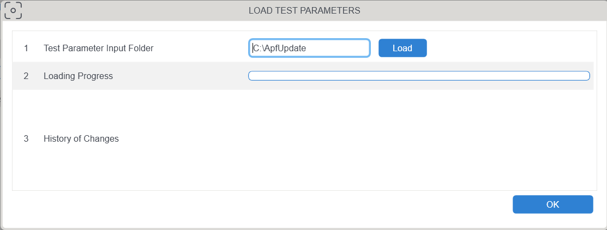

Obtaining IVD RAPID (APF Test Files) for Customer Instruments
In Box go to
Service Documentation - Dx\Immunoassay\DxI 9000\APF RAPID Files to obtain a new RAPID (APF test files) package for a customer.
Viewing Configured Units for Enabled Assays
Perform this procedure to view configured units for enabled assays.
In the Console App go to
MENU > System Configuration to open the System Configuration page.
Go to
Test Configuration > Test Menu to open the Tests page.
Select each enabled assay to view configured units.
Loading Tests (RAPID Package) Using a .BEC File
Perform this procedure to load tests (RAPID package) when using a
.bec file.
Note: Before you begin this procedure, read the following information:
You must perform this procedure while you are signed in to use the LabUser account. If you attempt to perform this procedure while signed in to use the BeckmanAdmin account, the
.bec file will not load.
Perform this procedure after the analyzer has finished processing samples. If you attempt to perform this procedure while the analyzer is processing samples, you might be instructed to stop the analyzer first or to wait until the current process is complete.
Always follow Beckman Coulter policies and procedures for USB flash drive use. For information about scanning for and removing malware, see
Detecting and Removing Malware from USB Drives.
Be sure all applicable modifications have been completed.
Be sure all applicable APF updates have been completed.
Some APF updates may not save configured units for some assays. Therefore, before you perform the APF update, note the configured units for all enabled assays. Failure to do this may result in confusion to the user or may result in transmitting to the LIS in an unanticipated unit. See
Viewing Configured Units for Enabled Assays for more information.
Insert the USB flash drive into a USB port on the back of the console monitor. The Software Update page will be displayed with a row for the APF on the page.
Select the row for the new APF that you want to install.
Select
Install. A confirmation dialog will be displayed.
Select
Yes. The Status column will indicate when the installation is complete.
Select
Clear Completed. The new APF row will be cleared from the page.
Close the Software Update page.
Note: If the Software Update page displays other items available for installation, such as system operating software or software security patches, you must install or defer each item on the page before you can close the page. See the
DxI 9000 Access Immunoassay Analyzer Instructions for Use for more information about managing updates to the analyzer computer.
Select
Download and save the file to a USB flash drive.
Note: You will use the USB flash drive to transfer the RAPID package to the system. Always follow Beckman Coulter policies and procedures for USB flash drive use. For information about scanning for and removing malware, see
Detecting and Removing Malware from USB Drives.
Loading Tests (RAPID Package) Using a .RAPID File
Perform this procedure to load tests (RAPID package) when using a
.rapid file.
Note: Before you begin this procedure, read the following information:
In some instances, the system will not allow you to load RAPID packages (e.g. if the package version is not greater than the currently installed package). If this occurs, execute scripts using the Service App. See
Executing Scripts Using the Service App for more information. Note that this will delete all currently loaded tests and data and should be used only in critical circumstances.
Always follow Beckman Coulter policies and procedures for USB flash drive use. For information about scanning for and removing malware, see
Detecting and Removing Malware from USB Drives.
Be sure all applicable modifications have been completed.
Be sure all applicable APF updates have been completed.
Some APF updates may not save configured units for some assays. Therefore, before you perform the APF update, note the configured units for all enabled assays. Failure to do this may result in confusion to the user or may result in transmitting to the LIS in an unanticipated unit.
In the Console App go to
MENU > System Configuration to open the System Configuration page.
Go to
Test Configuration > Test Menu to open the Tests page.
Select each enabled assay to view configured units.
Note the configured units for each enabled assay on the system.
Insert the USB flash drive with the RAPID package into an open USB port on the system.
Note: A best practice is to insert the USB flash drive with only the RAPID file at the root folder and with no other files present on the device. This will trigger the system to automatically copy the file to the default input folder
C:\ApfUpdate.
In the Console App go to
MENU > System Configuration to open the System Configuration page.
Go to
Test Configuration > Test Menu to open the Tests page.
Select
Import to open the Load Test Parameters window.
Figure 499:

Type the filepath to the folder that contains the RAPID package, if different from the default folder
C:\ApfUpdate.
Note: If the USB flash drive has more than just a single RAPID file at the root level, you must manually type the path. Otherwise, the file will not automatically be copied over to the
C:\ApfUpdate folder. Open File Explorer, copy the location of the RAPID file to be loaded, and paste it into the
Test Parameter Input Folder box.
Select
LOAD.
Select
OK.
Select the checkboxes for the tests to enable.
Go to
System Configuration.
Select
Activate.
Type comments (e.g. Installed RAPID package #.##).
Select
OK. The notification
The Configuration was Updated Successfully will be displayed.
Select
OK.
Reference the units you noted in Step 1 to confirm the units for each enabled assay have been configured to specifications.
Troubleshooting
If you encounter a failure or unexpected result while loading tests, see the table below for troubleshooting tips .
Symptom
Action
RSU (Remote Software Upate) does not recognize APF/Rapid
Be sure you are loading an APF version that is higher than the version on the instrument.
You must be signed in to use the LabUser account.
Verify the RSU is running in task manager > services.
If not running, start running services.
Perform clear test menu and reload software.
RAPID does not display in Software Update page.
Remove all files (not just other RAPID files) from the USB.
Reboot the PC with the USB inserted.
Try a different USB.
Reformat the USB per the Access 2/DxI 600 and 800 APF Update instructions.
Software Update page does not open when USB inserted.
Remove all files (not just other RAPID files) from the USB.
Reboot the PC with the USB inserted.
Try a different USB.
Reformat the USB per the Access 2/DxI 600 and 800 APF Update instructions.
No tests added, errors found: 1 "Folder not found"
Confirm the filepath to access the RAPID is correct. The default is
C:\ApfUpdate, so if loading from a different location, user must manually enter the filepath into the box to the left of the "LOAD" button.
Some tests loaded, but not all that are expected.
Confirm Geographical Location is set to the country in which the instrument resides and the correct/latest RAPID package was installed successfully. To check the installed RAPID file, navigate to
D:\Program Data\Beckman Coulter\Falcon\RAPID. The file present should be the same file which was installed.
Test menu updated appears to have silently failed - no tests present and no error/failure on the screen.
This may be due to the
RAPID folder not being present on the drive, which may occur in the event of a PC replacement/re-image (or in system manufacturing with a brand new system/console). Navigate to
D:\Program Data\Beckman Coulter\Falcon, if a folder titled
RAPID is not present, create one, and copy the RAPID package used to update the system to this location.
Access is granted once users complete training. It is assigned as part of system training. If unable to access/log in, work with your local support team to identify applicable training and short term countermeasures.
Questions regarding IVD RAPID (APF Test Files).
Refer to DxI 9000 APF Website Download Support Plan in the Applications Maunal.
Unable to install RAPID package
"Update" packages may be installed over currently installed packages only if the version number is greater than that which is currently installed. Confirm that user is attempting to install the correct RAPID package/download the package again and repeat installation attempt. Review any errors posted in the RAPID loading screen/menu and troubleshoot accordingly. In some cases it may be necessary to "clear" the test menu using the Service App. See
Executing Scripts Using the Service App.
"An error occurred while submitting" when activating draft configuration after deleting Rules and Tests at the same time.
This error typically occurs when the Delete Test Menu script is executed without first manually deleting any Rules configured on the system (may also occur with Test Panels, QC configurations, or additional Sample Types). See
Executing Scripts Using the Service App for more information. Be sure the above items are manually deleted before running the script.